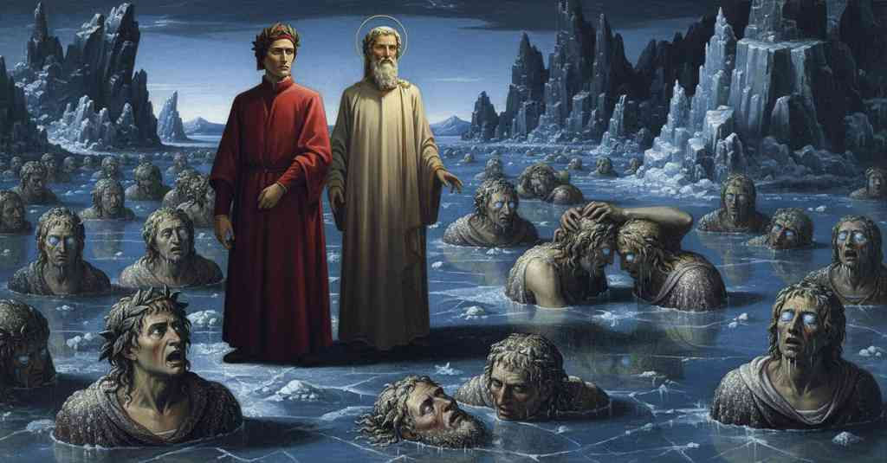

Inferno — Canto 32

Giunto nel lago ghiacciato di Cocito, Dante incontra i traditori della patria e dei parenti, tra cui i fratelli Alberti e Bocca degli Abati, per poi scoprire il conte Ugolino che divora la testa dell'arcivescovo Ruggieri. Having reached the frozen lake of Cocytus, Dante encounters traitors to their country and kin, including the Alberti brothers and Bocca degli Abati, before discovering Count Ugolino devouring the head of Archbishop Ruggieri. 氷結したコキュートスの湖に着いたダンテは、アルベルティ家の兄弟やボッカ・デリ・アバーティといった親族や祖国への裏切り者たちと出会い、やがてウゴリーノ伯爵がルッジェーリ大司教の頭を貪り食うのを発見する。
1
S’ïo avessi le rime aspre e chiocce,
If I had rhymes harsh and grating,
もし私に、荒々しく、しわがれた詩があったなら、
2
come si converrebbe al tristo buco
as would befit the sad hole
この悲しい穴にふさわしいような、
3
sovra ’l qual pontan tutte l’altre rocce,
upon which all the other rocks converge,
その上には他のすべての岩が支点をおく、
4
io premerei di mio concetto il suco
I would press out the juice of my conception
私は私の着想の汁を搾り出すだろう
5
più pienamente; ma perch’ io non l’abbo,
more fully; but since I have them not,
もっと完全に。しかし私はそれを持たないので、
6
non sanza tema a dicer mi conduco;
not without fear I bring myself to speak;
恐れずには語り始めることができない。
7
ché non è impresa da pigliare a gabbo
for it is no enterprise to take in jest
というのも、それは軽々しく引き受けるべき仕事ではないからだ、
8
discriver fondo a tutto l’universo,
to describe the bottom of the whole universe,
全宇宙の底を描写することは、
9
né da lingua che chiami mamma o babbo.
nor for a tongue that calls for mommy or daddy.
「マンマ」や「パパ」と呼ぶような舌には。
10
Ma quelle donne aiutino il mio verso
But may those ladies help my verse
だが、かの女神たちが私の詩を助けたまえ、
11
ch’aiutaro Anfïone a chiuder Tebe,
who helped Amphion to enclose Thebes,
テーバイを囲むのをアンピオンに助けた、
12
sì che dal fatto il dir non sia diverso.
so that the telling may not be diverse from the fact.
そうすれば、事実と言葉とが異ならぬだろう。
13
Oh sovra tutte mal creata plebe
O you above all ill-created rabble
ああ、他の誰よりも悪しく創られた民よ、
14
che stai nel loco onde parlare è duro,
who are in the place of which it is hard to speak,
語るも辛い場所にいる者たちよ、
15
mei foste state qui pecore o zebe!
better had you been here sheep or goats!
ここで羊か山羊であった方がましだったろうに！
16
Come noi fummo giù nel pozzo scuro
When we were down in the dark well
我々が暗い井戸の底に下りて、
17
sotto i piè del gigante assai più bassi,
beneath the giant's feet, and much lower still,
巨人の足よりもずっと低くなり、
18
e io mirava ancora a l’alto muro,
and I was still gazing at the high wall,
そして私がまだ高い壁を見上げていた時、
19
dicere udi’mi: «Guarda come passi:
I heard it said to me: "Watch how you pass:
私は声を聞いた「どう歩くか気をつけろ、
20
va sì, che tu non calchi con le piante
go so that you do not tread with your soles
行くがいい、だが足の裏で踏みつけぬように
21
le teste de’ fratei miseri lassi».
the heads of the wretched, weary brothers."
哀れな疲れ果てた兄弟たちの頭を」。
22
Per ch’io mi volsi, e vidimi davante
At which I turned, and saw before me
そのために私は振り向き、目の前に見たのは、
23
e sotto i piedi un lago che per gelo
and beneath my feet a lake that from frost
そして足の下には、凍てつきのために
24
avea di vetro e non d’acqua sembiante.
had the semblance of glass and not of water.
水ではなくガラスのような様相を呈した湖。
25
Non fece al corso suo sì grosso velo
Never for its course did the Danube in Austria make
冬にオーストリアのドナウ川がその流れに
26
di verno la Danoia in Osterlicchi,
so thick a veil in winter,
これほど厚い氷の膜を張ることはなく、
27
né Tanaï là sotto ’l freddo cielo,
nor the Don there under the cold sky,
寒い空の下のタナイス川もなかった、
28
com’ era quivi; che se Tambernicchi
as there was here; for if Tambernicchi
ここにあるほどには。もしタンベルニッキ山か、
29
vi fosse sù caduto, o Pietrapana,
had fallen upon it, or Pietrapana,
ピエトラパーナ山がその上に落ちたとしても、
30
non avria pur da l’orlo fatto cricchi.
it would not have made a creak even at the edge.
縁ですらピシリとも鳴らなかっただろう。
31
E come a gracidar si sta la rana
And as the frog stays to croak
そして蛙が鳴こうとするように
32
col muso fuor de l’acqua, quando sogna
with its muzzle out of the water, when the peasant girl dreams
水から鼻を出し、それは農婦が
33
di spigolar sovente la villana,
often of gleaning,
しばしば穂拾いを夢見る頃だが、
34
livide, insin là dove appar vergogna
livid, up to where shame appears,
青ざめて、恥が現れるところまで、
35
eran l’ombre dolenti ne la ghiaccia,
were the mournful shades in the ice,
苦しむ亡者たちは氷の中にあり、
36
mettendo i denti in nota di cicogna.
setting their teeth to the note of a stork.
コウノトリの音のように歯を鳴らしていた。
37
Ognuna in giù tenea volta la faccia;
Each one held its face turned downward;
皆それぞれ顔を下に向け、
38
da bocca il freddo, e da li occhi il cor tristo
from the mouth the cold, and from the eyes the sad heart
口からは寒さが、そして眼からは悲しい心が
39
tra lor testimonianza si procaccia.
procured their testimony among them.
彼らの間で証しとなっていた。
40
Quand’ io m’ebbi dintorno alquanto visto,
When I had looked around me for a while,
私が辺りをいくらか見回した時、
41
volsimi a’ piedi, e vidi due sì stretti,
I turned toward my feet, and saw two so tightly bound,
私は足元に目を向け、二人があまりに固く、
42
che ’l pel del capo avieno insieme misto.
that the hair of their heads was mixed together.
頭の髪が互いに混じり合っているのを見た。
43
«Ditemi, voi che sì strignete i petti»,
"Tell me, you who press your chests together so,"
「言え、汝ら、そのように胸を押し付け合う者よ」
44
diss’ io, «chi siete?». E quei piegaro i colli;
I said, "who are you?" And they bent their necks;
と私は言った、「お前たちは誰だ？」。すると彼らは首を曲げ、
45
e poi ch’ebber li visi a me eretti,
and after they had raised their faces to me,
私の方に顔を上げた後、
46
li occhi lor, ch’eran pria pur dentro molli,
their eyes, which before were only wet within,
彼らの目、それは以前は内側がただ濡れていたが、
47
gocciar su per le labbra, e ’l gelo strinse
dripped onto their lips, and the frost bound
唇の上に滴り落ち、そして氷が
48
le lagrime tra essi e riserrolli.
the tears between them and locked their eyes shut again.
彼らの間に涙を固め、再び閉じ込めた。
49
Con legno legno spranga mai non cinse
A clamp never fastened wood to wood
木と木を留め金がこれほど固く
50
forte così; ond’ ei come due becchi
so strongly; at which they, like two he-goats,
締めたことはない。ゆえに彼らは二頭の雄山羊のように
51
cozzaro insieme, tanta ira li vinse.
butted together, such was the rage that seized them.
互いに頭突きをし、それほどに怒りが彼らを圧倒した。
52
E un ch’avea perduti ambo li orecchi
And one who had lost both his ears
そして、寒さのために両耳を
53
per la freddura, pur col viso in giùe,
to the cold, with his face still bowed down,
失った者の一人が、なおも顔を俯けたまま、
54
disse: «Perché cotanto in noi ti specchi?
said: "Why do you stare so intently at us?
言った、「なぜそれほど我らを覗き込むのか？
55
Se vuoi saper chi son cotesti due,
If you wish to know who these two are,
もし汝がこの二人が誰か知りたいのなら、
56
la valle onde Bisenzo si dichina
the valley from which the Bisenzio flows down
ビゼンツォ川が流れ下る谷は
57
del padre loro Alberto e di lor fue.
belonged to their father, Alberto, and to them.
彼らの父アルベルトと彼らのものであった。
58
D’un corpo usciro; e tutta la Caina
They came from one body; and you can search all of Caina,
一つの体から彼らは出たのだ。そしてカイナのすべてを
59
potrai cercare, e non troverai ombra
and you will not find a shade more worthy
汝は探すがよい、そうすればゼラチンの中に押し込まれるに
60
degna più d’esser fitta in gelatina:
to be fixed in gelatin:
よりふさわしい魂は見つかるまい。
61
non quelli a cui fu rotto il petto e l’ombra
not he whose breast and shadow were pierced
アルトゥの手による一撃で胸と影を
62
con esso un colpo per la man d’Artù;
by a single blow from Arthur's hand;
共に砕かれた者でもなく、
63
non Focaccia; non questi che m’ingombra
not Focaccia; not this one who so obstructs my view
フォカッチャでもなく、この私を頭で
64
col capo sì, ch’i’ non veggio oltre più,
with his head that I can see no further,
邪魔して向こうを見えなくするこの者でもなく、
65
e fu nomato Sassol Mascheroni;
and was named Sassol Mascheroni;
その名はサッソル・マスケローニといった。
66
se tosco se’, ben sai omai chi fu.
if you are Tuscan, you surely know who he was.
もし汝がトスカーナ人なら、彼が誰であったか今やよく知っているだろう。
67
E perché non mi metti in più sermoni,
And so you do not make me speak more,
そして、私にこれ以上語らせぬために、
68
sappi ch’i’ fu’ il Camiscion de’ Pazzi;
know that I was Camiscion de' Pazzi;
知るがよい、私はカミション・デ・パッツィであったと。
69
e aspetto Carlin che mi scagioni».
and I await Carlino to make me seem innocent."
そして私は、私を免罪してくれるカルリーノを待っている」。
70
Poscia vid’ io mille visi cagnazzi
Then I saw a thousand faces made dog-like
その後、私は寒さのために犬のようになった
71
fatti per freddo; onde mi vien riprezzo,
by the cold; which is why a shudder comes over me,
千の顔を見た。それゆえ私は嫌悪感を覚え、
72
e verrà sempre, de’ gelati guazzi.
and always will, at the sight of frozen fords.
凍った沼地には、これからも常にそうであろう。
73
E mentre ch’andavamo inver’ lo mezzo
And while we were walking toward the center
そして我らが中央に向かって進んでいる間、
74
al quale ogne gravezza si rauna,
to which all weight gathers,
そこにはあらゆる重さが集まり、
75
e io tremava ne l’etterno rezzo;
and I was trembling in the eternal chill;
そして私は永遠の寒気に震えていた。
76
se voler fu o destino o fortuna,
whether it was will or fate or fortune,
それが意志か、運命か、幸運であったか、
77
non so; ma, passeggiando tra le teste,
I do not know; but, walking among the heads,
私には分からぬ。だが、頭々の間を歩いていると、
78
forte percossi ’l piè nel viso ad una.
I struck my foot hard against the face of one.
私は強く、ある者の顔に足をぶつけてしまった。
79
Piangendo mi sgridò: «Perché mi peste?
Weeping it screamed at me: “Why do you trample me?
泣きながら彼は私を叱った、「なぜ私を踏みつけるのか？
80
se tu non vieni a crescer la vendetta
If you do not come to increase the vengeance
もしお前が復讐を増しに来たのでなければ
81
di Montaperti, perché mi moleste?».
of Montaperti, why do you molest me?”.
モンタペルティの、なぜ私を苦しめるのか？」。
82
E io: «Maestro mio, or qui m’aspetta,
And I: “My Master, now wait for me here,
そして私は言った、「我が師よ、ここで私をお待ちください、
83
sì ch’io esca d’un dubbio per costui;
so that I may resolve a doubt by means of this one;
この者によって一つの疑念から抜け出せるように。
84
poi mi farai, quantunque vorrai, fretta».
then you may make me hurry as much as you wish”.
その後は、お望みとあれば、いくらでも急がせましょう」。
85
Lo duca stette, e io dissi a colui
The leader stood, and I said to that one
導き手は立ち止まり、私はその者に言った、
86
che bestemmiava duramente ancora:
who was still blaspheming harshly:
彼はまだ激しく神を罵っていた、
87
«Qual se’ tu che così rampogni altrui?».
“Who are you that you rebuke others so?”.
「そのように他人を叱責するお前は何者だ？」。
88
«Or tu chi se’ che vai per l’Antenora,
“Now who are you who go through Antenora,”
「では、アンテノーラを行くお前は何者だ、
89
percotendo», rispuose, «altrui le gote,
he answered, “striking the cheeks of others,
打ちながら」と彼は答えた、「他人の頬を、
90
sì che, se fossi vivo, troppo fora?».
so that, if you were alive, it would be too much?”.
もし生きていたなら、あまりに酷い仕打ちであろう？」。
91
«Vivo son io, e caro esser ti puote»,
“I am alive, and it may be dear to you,”
「私は生きている。そして、お前にとって好ましいことかもしれぬぞ」
92
fu mia risposta, «se dimandi fama,
was my reply, “if you ask for fame,
と私は答えた、「もし名声を求めるならば、
93
ch’io metta il nome tuo tra l’altre note».
that I place your name among the other notes”.
私がお前の名を他の記録の中に加えることもできるのだから」。
94
Ed elli a me: «Del contrario ho io brama.
And he to me: “For the contrary I have desire.
すると彼は私に言った、「私はその反対を欲する。
95
Lèvati quinci e non mi dar più lagna,
Get away from here and give me no more trouble,
ここから立ち去り、もう私を悩ますな、
96
ché mal sai lusingar per questa lama!».
for you know ill how to flatter in this icy sheet!”.
この氷の上ではお前の甘言は役に立たぬ！」。
97
Allor lo presi per la cuticagna
Then I seized him by the scruff of the neck
そこで私は彼のうなじの髪を掴み、
98
e dissi: «El converrà che tu ti nomi,
and said: “It will be needful that you name yourself,
そして言った、「お前は名を名乗らねばならぬ、
99
o che capel qui sù non ti rimagna».
or that no hair remain on you up here”.
さもなくば、ここにお前の髪は一本も残らぬだろう」。
100
Ond’ elli a me: «Perché tu mi dischiomi,
At which he to me: “Even if you pull out all my hair,
すると彼は私に、「お前が私の髪をむしり取ろうとも、
101
né ti dirò ch’io sia, né mosterrolti,
I will neither tell you who I am, nor show you,
私が誰であるかお前に言うことも、見せることもない、
102
se mille fiate in sul capo mi tomi».
if you fall upon my head a thousand times”.
たとえ千度、私の頭にお前が落ちてこようとも」。
103
Io avea già i capelli in mano avvolti,
I already had his hair wrapped in my hand,
私はすでに髪を手に巻きつけ、
104
e tratti glien’ avea più d’una ciocca,
and had pulled out more than one lock of it,
そして一房以上を引き抜いていた、
105
latrando lui con li occhi in giù raccolti,
he barking with his eyes kept cast down,
彼は目を下に向けたまま、吠えながら、
106
quando un altro gridò: «Che hai tu, Bocca?
when another cried: “What is wrong with you, Bocca?
その時、別の者が叫んだ、「どうした、ボッカ？
107
non ti basta sonar con le mascelle,
Is it not enough for you to chatter with your jaws,
顎で音を立てるだけでは足りぬのか、
108
se tu non latri? qual diavol ti tocca?».
without your barking? what devil is touching you?”.
吠えでもしないと？何の悪魔がお前に取り憑いた？」。
109
«Omai», diss’ io, «non vo’ che più favelle,
“Now,” I said, “I do not want you to speak more,
「もはや」と私は言った、「これ以上お前が話すことは望まぬ、
110
malvagio traditor; ch’a la tua onta
wicked traitor; for to your shame
邪悪な裏切り者よ。お前の恥のために
111
io porterò di te vere novelle».
I will carry true news of you”.
私はお前についての真実の知らせを持ち帰るだろう」。
112
«Va via», rispuose, «e ciò che tu vuoi conta;
“Go away,” he replied, “and tell what you will;
「去れ」と彼は答えた、「そしてお前の望むことを語れ。
113
ma non tacer, se tu di qua entro eschi,
but do not be silent, if you get out of here,
だが黙っているな、もしここから抜け出せたなら、
114
di quel ch’ebbe or così la lingua pronta.
of him who had his tongue so ready just now.
今しがた、あれほど口達者であった者について。
115
El piange qui l’argento de’ Franceschi:
He weeps here for the silver of the French:
彼はここでフランス人の銀貨を嘆いている、
116
“Io vidi”, potrai dir, “quel da Duera
‘I saw,’ you can say, ‘that one from Duera
『私は見た』とお前は言えるだろう、『ドゥエーラの者を
117
là dove i peccatori stanno freschi”.
there where the sinners are kept in the cool.’
罪人たちが涼しい場所にいる所で』と。
118
Se fossi domandato “Altri chi v’era?”,
If you should be asked ‘Who else was there?’,
もし『他に誰がいたか？』と問われたなら、
119
tu hai dallato quel di Beccheria
you have at your side the one from Beccheria
お前の傍らにはベッケリーアの者がいる、
120
di cui segò Fiorenza la gorgiera.
whose gorget Florence slit.
フィレンツェがその喉を断ち切った者だ。
121
Gianni de’ Soldanier credo che sia
Gianni de’ Soldanier I believe is
ジャンニ・デ・ソルダニエールもいると思う、
122
più là con Ganellone e Tebaldello,
farther on with Ganelon and Tebaldello,
向こうの方に、ガヌロンやテバルデッロと共に、
123
ch’aprì Faenza quando si dormia».
who opened Faenza when it was sleeping”.
ファエンツァが眠っている時にその門を開けた者だ」。
124
Noi eravam partiti già da ello,
We had already departed from him,
我らはすでに彼のもとを去っていたが、
125
ch’io vidi due ghiacciati in una buca,
when I saw two frozen in a single hole,
私は一つの穴に凍りついた二人を見た、
126
sì che l’un capo a l’altro era cappello;
so that the one head to the other was a hat;
一方の頭がもう一方の帽子となっていた。
127
e come ’l pan per fame si manduca,
and as bread is devoured for hunger,
そして飢えでパンを食らうように、
128
così ’l sovran li denti a l’altro pose
so the one on top set his teeth upon the other
上の者は下の者の歯を当てていた
129
là ’ve ’l cervel s’aggiugne con la nuca:
there where the brain is joined with the nape:
脳がうなじに繋がるその場所に。
130
non altrimenti Tidëo si rose
not otherwise did Tydeus gnaw
テュデウスが憤りのあまり
131
le tempie a Menalippo per disdegno,
the temples of Menalippus out of disdain,
メナリッポスのこめかみを噛んだのと異ならず、
132
che quei faceva il teschio e l’altre cose.
than that one was doing to the skull and the other parts.
その者は頭蓋と他の部分を食らっていた。
133
«O tu che mostri per sì bestial segno
«O you who show by such a bestial sign
「おお、汝、かくも獣のような仕草で示す者よ
134
odio sovra colui che tu ti mangi,
hatred for the one you are eating,
お前が食らうその者への憎しみを、
135
dimmi ’l perché», diss’ io, «per tal convegno,
tell me the why,» I said, «on this condition:
その理由を私に言え」と私は言った、「このような約束で、
136
che se tu a ragion di lui ti piangi,
that if you with reason complain of him,
もしお前が正当な理由で彼を嘆くのなら、
137
sappiendo chi voi siete e la sua pecca,
knowing who you are and what his sin was,
お前たちが誰で、彼の罪が何であるかを知り、
138
nel mondo suso ancora io te ne cangi,
in the world above I may yet repay you for it,
上の世で私がそのお返しをしよう、
139
se quella con ch’io parlo non si secca».
if that with which I speak does not dry up.»
私の語るこの舌が干からびなければ」。